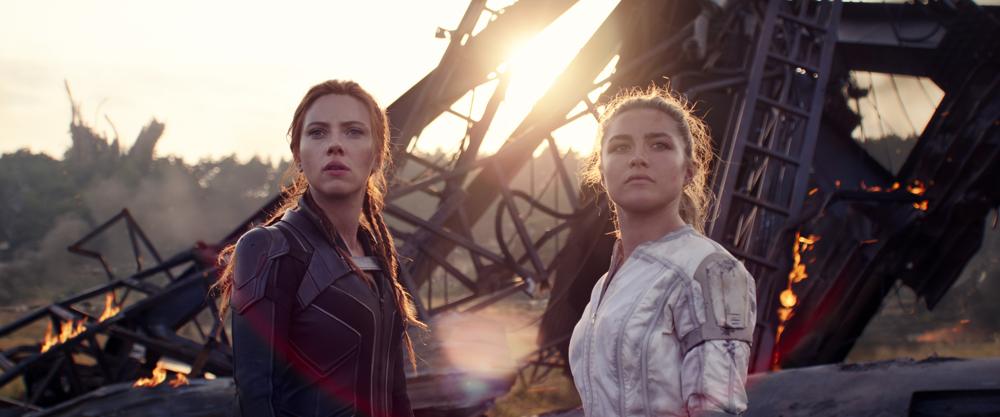

Las críticas de 'Black Widow' están en: lo que los críticos tienen que decir sobre lo último de Marvel
Las reseñas de Black Widow de Marvel Studios están aquí, y parece que la película, cuyo lanzamiento se retrasó más de un año debido a COVID-19, valió la pena la espera. Muchos críticos lo elogiaron por su fuerte elenco y lo que puede ser una de las mejores acciones que el MCU haya visto. Sin embargo, los críticos también notaron que una película en solitario para Black Widow / Natasha Romanoff (Scarlett Johansson), aunque muy atrasada, parece demasiado poco, demasiado tarde después de su muerte en Avengers: Endgame .
Después de los eventos de Captain America: Civil War , Black Widow profundiza en el pasado de Natasha y sus vínculos con el insidioso programa Black Widow. La película también trae caras nuevas al MCU con la presentación de la "familia" de Natasha: Yelena (Florence Pugh), Alexei (David Harbour) y Melina (Rachel Weisz).
Esto es lo que dicen los críticos sobre Black Widow.
Una película independiente sólida
Mashable , Angie Han
Durante largos períodos, es casi posible olvidar que Black Widow es una película de Marvel, y eso es algo bueno. Es el limpiador de paladar que la franquicia necesitaba después de la intensa polinización cruzada de las películas de la Fase Tres y los programas de Disney +: una aventura autónoma que vuelve a lo básico que funciona tan bien para los novatos y los espectadores casuales como para los fanáticos de toda la vida.
Feria de la vanidad , Richard Lawson
Black Widow es una especie de precuela y una historia de origen, un vistazo robusto y satisfactorio a un interludio definitorio en la vida de Black Widow que casi, casi logra el truco de ser completamente suyo.
IGN , Nicole Clark
La película es, en una palabra, ambiciosa. Es una película de superhéroes, pero también un thriller de acción de espionaje, un drama familiar disfuncional, una despedida y, abrumadoramente, una película sobre la recuperación del abuso. Gran parte de ella no parece una película de Marvel en absoluto, gracias al tono más oscuro que se usa para contar la historia de un programa ruso que secuestra a niñas y las entrena para que se conviertan en asesinas.
Acción trepidante
Mashable , Angie Han
Con relativamente pocos superpoderes o incluso super-gadgets en juego, las secuencias de acción tienden más hacia el tipo de persecuciones de vehículos y combates cuerpo a cuerpo que podrías ver en una película de Misión: Imposible o James Bond, en contraposición a la más abiertamente fantástica. exhibiciones de una película de Thor o Spider-Man. Es para mejor. La coreografía (comparativamente) fundamentada conduce a algunas de las batallas más emocionantes de Marvel desde al menos Capitán América: The Winter Soldier . De hecho, una secuencia temprana que involucre un avión podría ser incluso mejor que cualquier otra cosa en esa película.

Fuertes actuaciones en todos lados
Cinemablend , Sean O'Connell
El ambiente familiar y la química compartida entre Johansson, Pugh, Harbour y Weisz aseguran que Black Widow se mantenga por sí sola y prospere cuando la acción se ralentiza ... Harbour, específicamente, se roba el espectáculo con su arrogancia arrogante, interpretando a una vez significativa Espía soviético que está fuera del juego pero que aún no se da cuenta. Pero Johansson y Pugh también forjan un vínculo fraternal que canta cada vez que se lanzan críticas entre sí en medio de la batalla.
IndieWire , Eric Kohn
Pugh ha mantenido el mismo equilibrio ansioso y duro a través de todo, desde "Lady Macbeth" hasta "Midsommar", y aquí sirve un perfecto contraste joven para el excesivo exceso de confianza de Johansson. Pocas historias de rivalidad entre hermanos incluyen tantos golpes como zingers, pero esta hace malabares con ambos con aplomo.